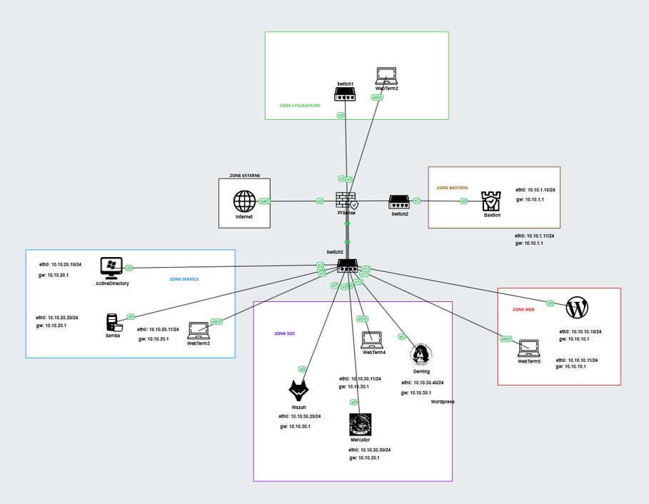

BlueWave Project
For the BlueWave project, which aimed at creating a secure enterprise infrastructure for BlueWave Logistics Company, we integrated several key components to ensure robust security and efficient operations. The project included a pfSense firewall for network security, a Security Operations Center (SOC) to monitor and respond to threats, a WordPress site for external communications and content management, a bastion host for secure remote access, and an Active Directory (AD) for centralized authentication and management of users and resources. These elements collectively provided a comprehensive and secure framework, enhancing both the security and operational efficiency of BlueWave’s day-to-day business processes.
